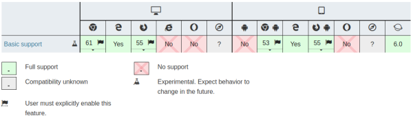

Back to Home
The Payment Request API
Many problems related to online shopping-cart abandonment can be traced
to checkout forms, which can be difficult and time consuming to fill out
and often require multiple steps to complete. The Payment Request API is
meant to reduce the number of steps needed to complete a payment online,
potentially doing away with checkout forms. It aims to make the checkout
process easier, by remembering a user's details, which are then passed
along to a merchant hopefully without requiring a HTML form.
-
Fast purchase experience: Users enter their details once into
the browser and are then ready to pay for goods and services on the
web. They no longer have to fill out the same details repeatedly
across different sites.
-
Consistent experience on every site (that supports the API): As
the payment sheet is controlled by the browser, it can tailor the
experience to the user. This can include localizing the UI into the
user's preferred language.
-
Accessibility: As the browser controls the input elements of
the payment sheet, it can assure consistent keyboard and screen reader
accessibility on every website without developers needing to do
anything. A browser could also adjust the font size or color contrast
of the payment sheet, making it more comfortable for the user to make
a payment.
-
Credentials management: Users can manage their credit cards and
shipping addresses directly in the browser. A browser can also sync
these “credentials” across devices, making it easy for
users to jump from desktop to mobile and back again when buying
things.
-
Consistent error handling: The browser can check the validity
of card numbers, and can tell the user if a card has expired (or is
about to expire). The browser can automatically suggest which card to
use based on past usage patterns or restrictions from the merchant
(e.g, “we only accept Visa or Mastercard”), or allow the
user to say which is their default/favorite card.
To request a payment, a web page creates a
PaymentRequest
object in response to a user action that initiates a payment, such as
clicking a “Purchase” button. The PaymentRequest allows the
web page to exchange information with the user agent while the user
provides input to complete the transaction.
Note: The API is available inside cross-origin
<iframe> elements only if they have had the
allowpaymentrequest attribute set on them.
Browser compatibility

More Info